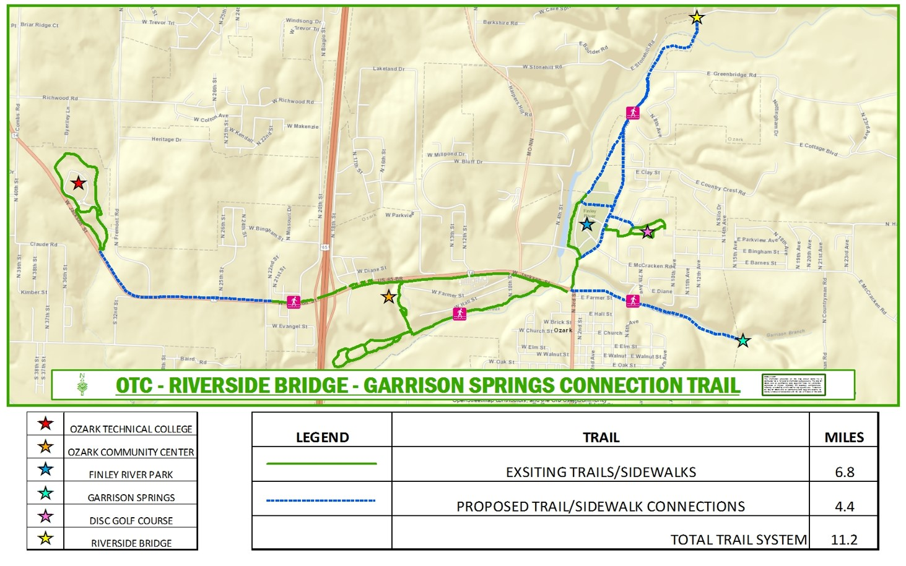

Trails can help transform a community by promoting healthy lifestyles, offering an alternative form of transportation, and increasing economic opportunities.
Ozark will be able to use a portion of the revenue generated to apply for matching grant funds from state and federal sources. The city will be able to significantly expand our trails while only costing us pennies for each dollar spent on the system.
By adding 4 miles of new trails to our existing trail system we will create a network over 11 miles long. The result will be a spectacular journey stretching from OTC's Richwood Valley campus through the heart of Ozark to Riverside Bridge and Garrison Spring.
